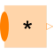

ProductProduct of Integer: y = u[1]*u[2]* ... *u[n] |

|
Information
This information is part of the Modelica Standard Library maintained by the Modelica Association.
This blocks computes the scalar Integer output "y" as product of the elements of the Integer input signal vector u:
y = u[1]*u[2]* ... *u[N];
The input connector is a vector of Integer input signals. When a connection line is drawn, the dimension of the input vector is enlarged by one and the connection is automatically connected to this new free index (thanks to the connectorSizing annotation).
The usage is demonstrated, e.g., in example Modelica.Blocks.Examples.IntegerNetwork1.
If no connection to the input connector "u" is present, the output is set to zero: y=0.
Parameters (1)
| nu |
Value: 0 Type: Integer Description: Number of input connections |
|---|
Connectors (2)
| u |
Type: IntegerVectorInput[nu] Description: Vector of Integer input signals |
|
|---|---|---|
| y |
Type: IntegerOutput Description: Integer output signal |
Used in Examples (1)
|
Modelica.Blocks.Examples Demonstrates the usage of blocks from Modelica.Blocks.MathInteger |